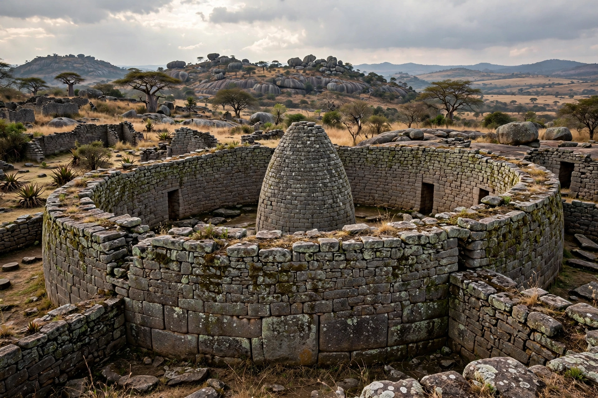

| Rozvi Empire | |
|---|---|
| Period | c. 1660s–1866 |
| Capital | Danangombe (Dhlo-Dhlo); earlier Khami |
| Ruler title | Mambo |
| Founder | Changamire Dombo |
| Region | Zimbabwean plateau |
| Preceded by | Kingdom of Butua (Torwa) |

The Rozvi Empire (c. 1660s–1866) was a Shona state on the Zimbabwean plateau, founded by Changamire Dombo, a former herdsman or soldier of the Mutapa state who built a powerful military confederation. At its height the empire dominated the plateau between the Zambezi and Limpopo rivers, controlling the gold trade to the coast.
In the 1680s and 1690s Changamire's Rozvi armies defeated the Torwa kingdom of Butua, taking over the stone capital of Khami, and then fought a series of wars against the Portuguese of Portuguese Mozambique. By 1695 the Rozvi had expelled the Portuguese from all their fairs on the plateau, confining them to the Zambezi valley and the coast, and made the Mutapa king a vassal. The empire's wealth rested on gold, cattle and its feared standing army, whose discipline Portuguese sources described with respect.
The Rozvi king, the Mambo, ruled through provincial governors, many drawn from his own family, and a royal cult centred on the Mwari shrines. The capital later moved to Danangombe (Dhlo-Dhlo). In the 1830s the empire was shattered by the upheavals of the Mfecane: Zwangendaba's Ngoni and then Mzilikazi's Ndebele invaded, killing the Mambo Chirisamhuru around 1836. The last Mambo, Tohwechipi, was defeated by the Ndebele in 1866, ending the empire, though Rozvi chiefs retained local authority.